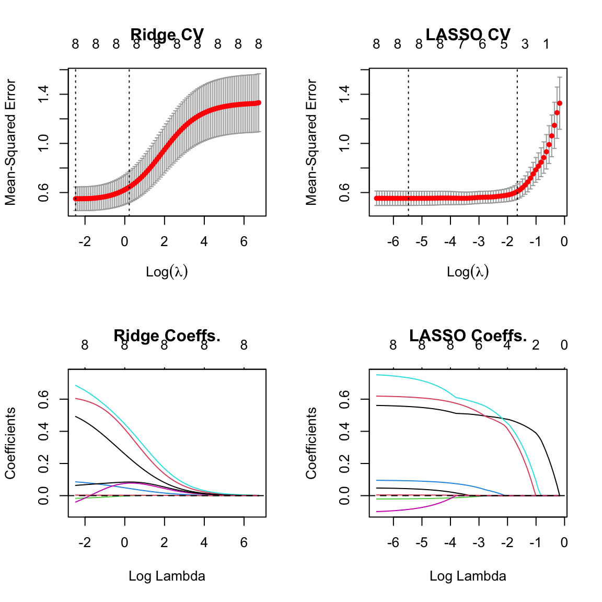

library(glmnet)
data(prostate, package = "ElemStatLearn")
X <- prostate |> dplyr::select(-train, -lpsa) |> as.matrix()
Y <- prostate$lpsa
lasso <- cv.glmnet(x = X, y = Y) # alpha = 1 by default
ridge <- cv.glmnet(x = X, y = Y, alpha = 0)Lecture 7: LASSO Regression
Learning Objectives
By the end of this lecture, you should be able to:
- Implement LASSO regression using both constrained and penalized formulations
- Identify norm penalties that enforce sparsity versus shrinkage in parameter space
- Compare and contrast ridge regression vs LASSO in terms of variable selection and shrinkage
- Reason about when LASSO, ridge, or variants are the most appropriate for a given problem
- Construct a model selection procedure to choose between LASSO versus ridge
Recap: Ridge Regression, Shrinkage versus Variable Selection
So far we have discussed two modelling choices to reduce variance in linear regression:
- Variable selection: use a subset of the features (e.g., best subset selection, forward stepwise selection, LAR)
- Ridge regularization: apply a \(\lambda \Vert \beta \Vert_2^2\) penalty to the optimization objective to shrink coefficients towards zero
- (There’s always the option of adding more training data.)
- It’s important to note that ridge and variable selection are doing VERY different things!
- Ridge regression shrinks coefficients towards zero, but does not set any coefficients exactly to zero.
- Variable selection methods (best subset, forward stepwise, LAR) set some coefficients exactly to zero, but do not shrink the non-zero coefficients.
Goal: Automatic Variable Selection?
Ridge added a constraint to our OLS optimization problem to limit the size of the coefficients.
Maybe we could add a similar constraint to limit the number of non-zero coefficients?
(Note that having \(< p\) non-zero coefficients, or having \(> 0\) coefficients set to zero, is equivalent to removing some covariates from the model.)
Such a constraint would yield the following optimization problem:
\[ \mathrm{argmin}_{\hat \beta} \frac 1 n \sum_{i=1}^n (y_i - x_i^T \hat\beta)^2 \quad \text{subject to } \Vert \hat\beta \Vert_0 < s\]
where \(\Vert \hat\beta \Vert_0\) is the number of non-zero entries in \(\hat\beta\).
Unfortunately, this optimization problem takes \(O(2^p)\) time to solve.
Why?
- Mathematically, it is a NP-hard optimization problem.
- Intuitively, solving this problem is equivalent to exhaustive subset search that you probably learned about in STAT 306. There are \(2^p\) possible subsets of \(p\) features, and we would need to evaluate the training error for each subset to find the best one.
Fortunately, we can solve a simpler optimization problem that encourages sparsity in the coefficients. (Mathematically, we solve a convex relaxation).
Solution: Diamond Constraint Regions
- Recall that ridge constrained our solutions so that the \(\beta\) vector lied within a circle (or sphere, or hypersphere) of radius \(s\).
- Instead, what if we set our constraint region to be a diamond?
The minimum sum-of-squares solution under this constraint will (not always, but often) be at a corner of the diamond, which is where one or more coefficients are exactly zero.
Crucially, the sum-of-squares objective with this diamond constraint is a convex optimization problem that can be solved efficiently!
LASSO Regression
- LASSO regression aims to (approximately) do automated variable selection using this diamond constraint.
- It is another regularized regression method, like ridge regression, which will reduce variance (at the expense of a bit of bias).
- Unlike ridge regression, the constraint/regularization yields a different effect on the learned coefficients: it encourages sparsity (i.e. some coefficients exactly zero) rather than just shrinkage (i.e. all coefficients small but non-zero).
Constrained Formulation
This diamond constraint region is mathematically defined by the set of all \(\hat \beta\) where
\[ \Vert \hat\beta \Vert_1 := \sum_{j=1}^p |\hat\beta_j| < s\]
which yields the constrained optimization problem
\[ \mathrm{argmin}_{\hat \beta} \frac 1 n \sum_{i=1}^n (y_i - x_i^T \hat\beta)^2 \quad \text{subject to } \Vert \hat\beta \Vert_1 < s\]
Compare this to the ridge regression constrained optimization problem. For ridge, the constraint was \(\Vert \hat\beta \Vert_2^2 < s\) (i.e. a circle/sphere/hypersphere constraint rather than a diamond). Otherwise the problems are identical.
Regularized (Penalized) Formulation
As with ridge regression, we can rewrite the constrained optimization problem as a penalized optimization problem:
\[ \mathrm{argmin}_{\hat \beta} \frac 1 n \sum_{i=1}^n (y_i - x_i^T \hat\beta)^2 + \lambda \Vert \hat\beta \Vert_1 \]
where again each value of \(s\) in our constrained formulation corresponds to a value of \(\lambda\) in our penalized formulation.
Computing the LASSO Estimator
- Unlike ridge regression, there is no closed-form solution for the LASSO estimator \(\hat\beta_\lambda\).
- Instead, we must use numerical optimization to solve the penalized optimization problem.
TipHow do we Numerically Optimize the LASSO Objective?
(Advanced content for those who are interested)
- The LASSO problem is a convex optimization problem, so typically optimizers like gradient descent will (in theory) converge to the global optimum.
- However, gradient descent doesn’t do well with the non-differentiable corners of the \(\ell_1\) norm.
- Instead, it’s common to use coordinate descent (which is what
glmnetuses). - Proximal gradient descent algorithms are also popular for solving the LASSO problem.
Aside: Regularization with Other Vector Norms
The ridge regularization penalty (\(\Vert \beta \Vert_2^2\)), the LASSO regularization penalty (\(\Vert \beta \Vert_1\)), and the “sparsity” penalty (\(\Vert \beta \Vert_0\)) are all examples of vector norm penalties.
More specifically, each is an example of a \(\ell_p\)-norm, where the general form is given by:
\[\Vert \beta \Vert_p = \left( \sum_{j=1}^p |\beta_j|^p \right)^{1/p}\]
Below is a plot of values of the constraint \(\Vert \beta \Vert_p = 1\) for various values of \(p\):
Any of these norms could be used as a regularization penalty in linear regression (though some may yield hard-to-solve optimization problems).
Important Special Cases
- \(p = 0\) is the number of non-zero entries in \(\beta\) (the “sparsity” penalty)
- \(p = \infty\) is the maximum absolute value of any entry in \(\beta\) (the “max” penalty)
- \(p \geq 1\) gives a convex function of \(\beta\), which makes optimization nice
- \(p < 2\) gives a norm with “corners” (i.e., non-differentiable points on the axes), which encourage sparsity
Example: LASSO versus Ridge Regression
- Here we’re going to run both ridge and LASSO regression on the prostate cancer dataset from Lab 01.
- I will do a CV sweep to find the best regularization parameter \(\lambda\) for each method.
- Again we’ll use
glmnetto fit both models.- The argument
alpha = 1incv.glmnetspecifies LASSO, whilealpha = 0specifies ridge regression.
- The argument
- Now let’s plot the CV curves and coefficient paths for both ridge and LASSO as functions of their regularization parameter \(\lambda\).
- Note that we cannot compare the \(\lambda\) values directly between ridge and LASSO, since they are on different scales.
- (The \(\lambda\) values also don’t have any intrinsic meaning. Larger values imply more regularization, but a \(\lambda = 4.7\) means nothing in isolation.)
par(mfrow = c(2, 2))
# Get y-axis range for consistent scaling
ridge_mse <- range(c(ridge$cvm - ridge$cvsd, ridge$cvm + ridge$cvsd))
lasso_mse <- range(c(lasso$cvm - lasso$cvsd, lasso$cvm + lasso$cvsd))
ylim_range <- range(ridge_mse, lasso_mse)
plot(ridge, main = "Ridge CV", ylim = ylim_range)
plot(lasso, main = "LASSO CV", ylim = ylim_range)
# Get coefficient range for consistent scaling
ridge_coef_range <- range(ridge$glmnet.fit$beta)
lasso_coef_range <- range(lasso$glmnet.fit$beta)
coef_ylim <- range(ridge_coef_range, lasso_coef_range)
plot(ridge$glmnet.fit, main = "Ridge Coeffs.", xvar = "lambda", ylim = coef_ylim)
abline(h = 0, lty = 2)
plot(lasso$glmnet.fit, main = "LASSO Coeffs.", xvar = "lambda", ylim = coef_ylim)
abline(h = 0, lty = 2)
- The numbers on the top of the plots indicate the number of non-zero coefficients at each value of \(\lambda\).
- Notice that ridge regression always has all 8 coefficients non-zero, while LASSO sets some coefficients exactly to zero for larger values of \(\lambda\).
When Should I Consider using Ridge over LASSO?
If all of the covariates are truly relevant, and dropping too many of them would hurt accuracy
Why?
- LASSO tends to select only a few variables, and set the rest to zero. If all variables are relevant, this can lead to underfitting.
- Ridge regression, on the other hand, shrinks all coefficients towards zero, but keeps them all in the model.
If I create a one-hot encoding of a categorical variable with many levels (e.g., ZIP code)
Why?
- LASSO might drop some of the levels but not others, which can be hard to interpret
- Ridge regression will tend to keep all levels, but shrink them towards zero
- A variant of LASSO called the group LASSO can be used to select or drop all levels of a categorical variable together.
If computational resources are limited
Why?
- LASSO requires numerical optimization to solve, while ridge regression has a closed-form solution.
- We have to run multiple optimization problems for each value of \(\lambda\) we want to test in cross-validation.
- Ridge regression only requires a single SVD, which can be reused for all values of \(\lambda\).
- Moreover, as we will see in a later lecture, we can compute the LOO-CV risk estimate for ridge almost for free, while LASSO requires refitting the model \(n\) times.
CautionWhen Should I Avoid Using Both Ridge and LASSO?
If I’m in a high-bias/low-variance regime to begin with, I shouldn’t use either method.
Why?
- Regularization (both ridge and LASSO) increases bias but reduces variance.
- If the un-regularized model is already low variance, regularization will likely hurt performance.
Important Practical Considerations when Using LASSO or Ridge Regression
The intercept \(\hat \beta_0\) is never penalized!
Why?
- The intercept parameter is an estimate of the mean of \(Y\), and we generally do not want to shrink this estimate.
- In practice, we usually standardize the response to have mean zero and variance one before fitting a regularized regression model.
It’s important to center the features (i.e. subtract off each covariate’s empirical mean) before fitting.
Why?
- If the features are not centered, the intercept will implicitly be penalized, which can lead to suboptimal performance.
- Centering the features ensures that the intercept is the mean of \(Y\) when all other covariates are zero.
- Standardizing the features (i.e. scaling them to have unit variance) is also common, but not strictly necessary for LASSO or ridge regression.
Categorical parameters require special care with LASSO.
Why?
- See above
Ridge or LASSO penalties can be used in other (non-linear regression) models.
Summary
- Ridge regression applies an \(\ell_2\) penalty to shrink coefficients towards zero, but does not set any coefficients exactly to zero.
- LASSO regression applies an \(\ell_1\) penalty to encourage sparsity in the coefficients, setting some coefficients exactly to zero.
- LASSO requires numerical optimization to solve, and care is needed when using categorical variables.
- Both ridge and LASSO increase bias but reduce variance.
- The choice between ridge and LASSO depends on the specific problem and goals of the analysis.